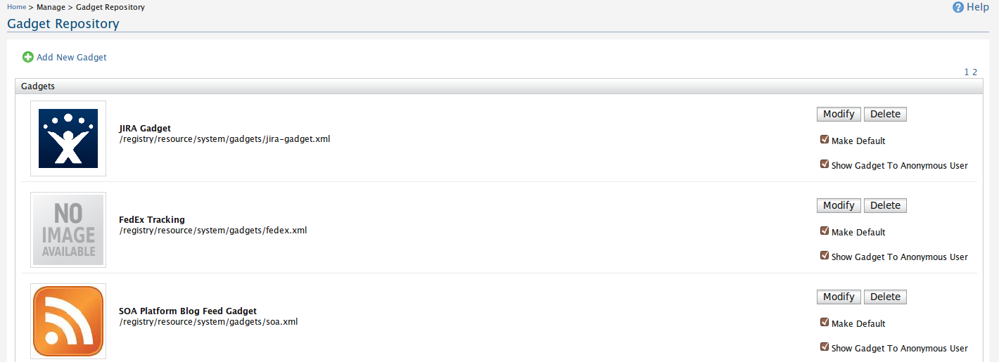
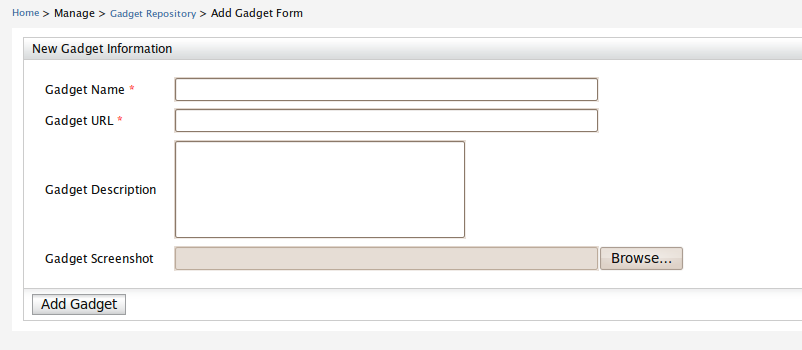
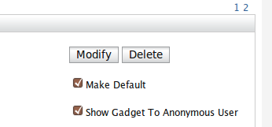
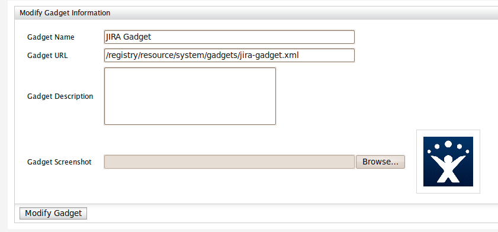
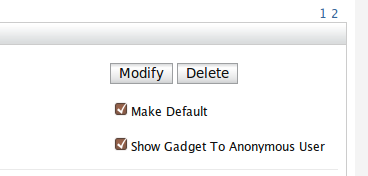

Gadget Repository
Gadget Repository shows the entire list of gadgets available for portal users. This area is restricted to the server
administrator to add, edit and manage enterprise gadgets

Add Gadgets
Adding Gadgets is a simple process. Simply fill the form with required feilds and the gadget will be added to the
repository.

Modify Gadgets
The gadgets can be modified by Clicking on "modify" at any gadget listing.


Delete Gadgets
The gadgets can be deleted by clicking on "delete" at any gadget listing.
